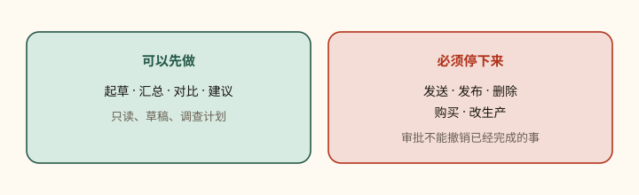

第 09 课
先停下来的，才是真边界
你可以把调查和草稿交给 Bot。发送、发布、花钱、删数据和改生产，必须经过你。

先把边界写进请求
先给草稿，再谈改动
对账活动数据并起草一份建议的预算调整。不要改活动，也不要给代理商发消息。展示当前值、建议值和预期影响之后，再向我要审批。
这些动作默认写进禁区：发消息或邀请、发布内容、购买和资金转移、删除或覆盖数据、改权限、改生产、接受法律条款。
审一条动作
需要审批时，对话会展示拟议操作和输入。先看目标、范围、数值。
- 桌面：Allow once 放行这次；Deny 拒绝；Always allow 可存一条匹配规则。
- iPhone：Approve once / Deny。
看不清目标或效果就不要批。让 Bot 用白话解释，或先出草稿。审批不能撤销已经完成的工作。
Auto-review
当 Auto-review 强制可用时，Grok Bot 会在工具调用和电脑动作执行前评估。打开 Settings → General → Auto-review 添加规则。
- Require Approval：匹配的动作一律停下给你。
- Always Allow：仅当自动审查没有别的理由拦截时才放行。
- 两类都匹配时，Require Approval 获胜。
规则写窄，对准已知动作和范围。例如：发任何外部邮件前要审批；改生产仪表盘前要审批；允许在 /workspace/reports 跑 git status。避免「允许浏览器里的一切」这种宽规则。网站和工具会变。Auto-review 基于模型，是补充，不是最小权限的替代。个人规则存在当前桌面并同步到它的云电脑；另一台桌面要单独核对。
密码自己填
密码、passkey、两步验证码、CAPTCHA、支付确认：打开 Agent Computer → 接管 → 做完敏感步骤 → 交还控制。不要把密码或一次性码发进普通聊天。secure secret request 见第 06 课：遮罩、不进文字记录、不给模型看。
本机电脑
Settings → General → Agent → Execution on Local Computer。默认 Ask every time。没有让 Bot 动你本地文件的具体理由，就选 Never allowed。这不影响云电脑。
共享电脑不是安全边界
- 不要用「分开的 Bot」当隔离。
- 某个服务不该再被使用时，在共享电脑上登出。
- 做完后删掉敏感临时文件。
- 不再需要的连接器：卸载，并在源服务撤销授权。
分享 Bot 也不是安全边界：公开链接只复制配置，不含电脑和登录，但 description / skills / routines 里的秘密会被看见。
账号与隐私
Grok Bot 使用 Cursor 认证和账号数据设置。需要云端存储，不支持 Legacy Privacy Mode。训练退出遵循适用的 Cursor 账号与隐私设置。合同细节看当前 Cursor Privacy Policy 与安全说明。组织管理员可能限制本机执行，并提供云电脑托管设置。
收回访问
- 暂停或删除相关 Routines。
- 在共享电脑上登出网站。
- 卸载连接器，并在源服务撤销授权。
- 从
/workspace去掉敏感项目文件。 - Hide 或 Delete 不该再出现的 Bot。
- 若要删除 Cursor 账号，走账号设置流程。
删除 Bot 不会清掉共享电脑上的文件或浏览器会话。
最小权限清单
- 只连接流程需要的工具。
- 源系统支持时用范围受限的服务账号。
- 从只读任务和草稿输出开始。
- 发送、发布、购买、删除、改生产，一律审批。
- 定期看已装连接器和活跃 Routines。
- 源系统或预期流程一变，就暂停 Routine。
- 重要决策保留源链接和动作记录。